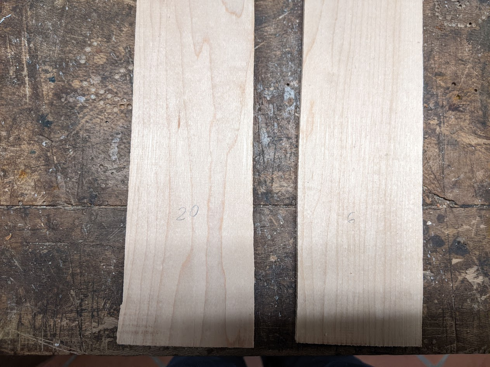
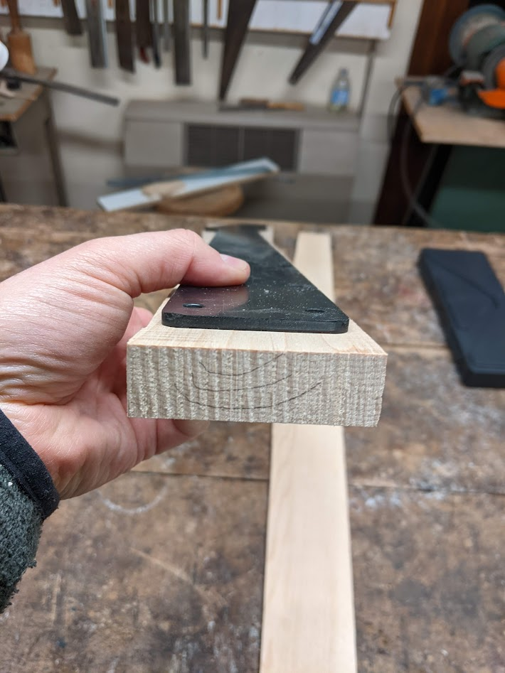
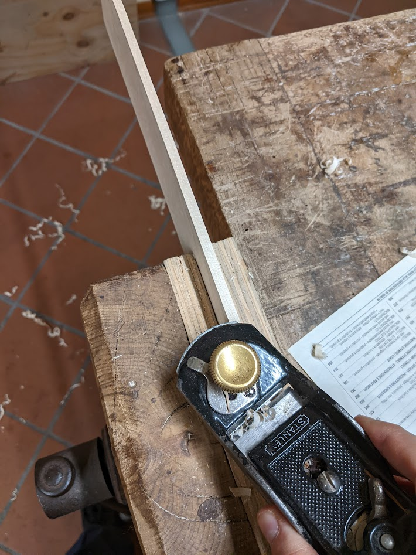
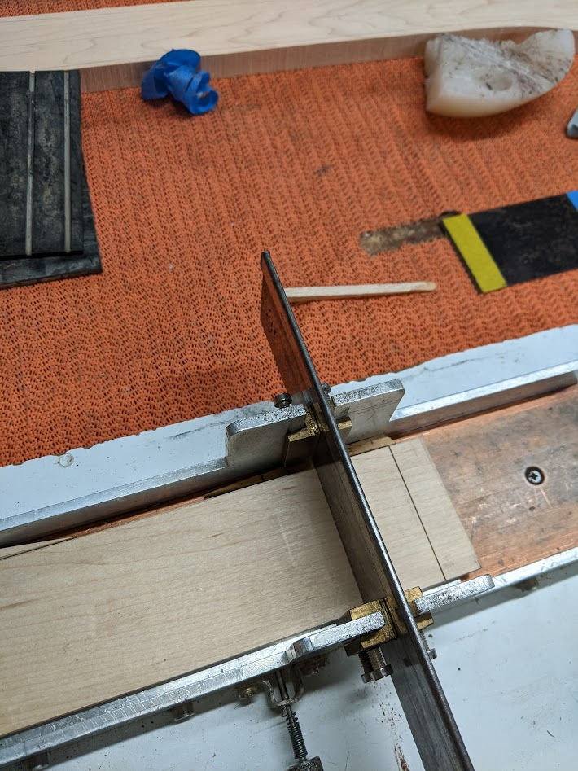
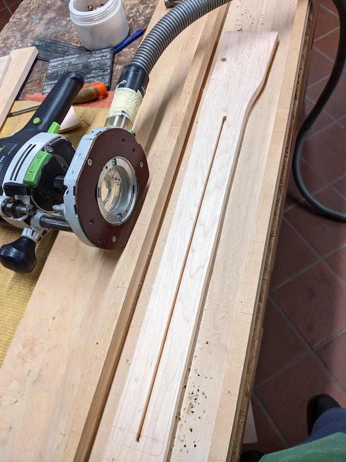
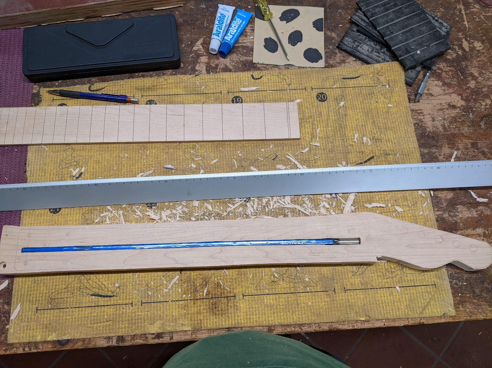
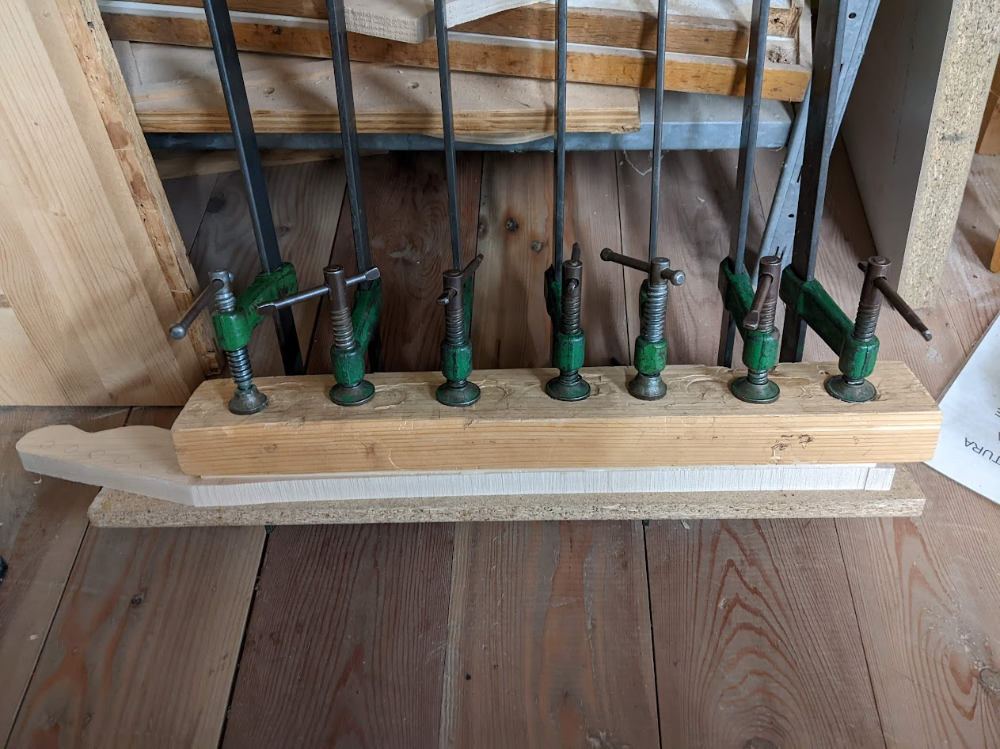

The anti-shred neck
Finalmente il manico!

Nella costruzione del body è accettabile avere qualche piccolo errore, che può essere aggiustato in un secondo momento o coperto con la verniciatura. Ad esempio nel fresare gli scassi dei pickup è stata commessa una sbavatura rovinando l’area nelle vicinanze della vite del pickup al manico. Questo errore sarebbe stato un bel problema se avessi avuto una verniciatura trasparente con venature a vista, ma nel mio caso verrà tutto coperto dal battipenna, quindi poco male.
Nel caso del manico, qualsiasi piccolo errore può portare al disastro. Speriamo di riuscirci ed arrivare fino alla fine, in questo episodio racconto i passi necessari per arrivare all’incollaggio di tastiera e manico.
Da un pezzo di acero grezzo sono stati ricavati due pezzi, tagliati con la sega a nastro lungo vena. I due pezzi sono stati quindi calibrati con la pialla a spessore e portati a 20 mm e 6 mm rispettivamente per il manico e per la tastiera.

Una particolare da tenere a mente nella costruzione della tastiera è la disposizione della venatura del legno, che determina l’aspetto del manico, ma soprattutto la disposizione degli anelli di accrescimento. Questi devono essere rivolti con la concavità verso l’alto, in tal modo, se mai si dovesse imbarcare il legno, agendo sul trus rod è possibile tornare alla condizione iniziale.

Tracciatura e quotatura
Stabilito il verso del pezzo da lavorare, si passa al tracciamento e quotatura con una matita del profilo del manico su tutte e due le facce. Per questa operazione è stata utilizzata una dima costruita sulla sagoma di un manico telecaster classico. La procedura della tracciatura è fatta con i seguenti passi:
Si traccia il perimetro esterno e i fori cercando di centrare il più possibile la dima al pezzo da lavorare;
Si trova l’asse principale, segnando due punti appartenenti all’asse sufficientemente lontani tra loro, e si procede al tracciamento con una riga lunga;
Si procede a riportare l’asse sull’altra faccia. In questa operazione è necessario prestare la massima cura, ci vuole molta precisione. Una matita appuntita e una squadretta da falegname sono fondamentali.
Si riportano poi almeno due quote in modo da posizionare correttamente la dima sull’altra faccia. Io ho scelto una estremità della dima e la linea coincidente con l’asse che passa per i fori della base del manico (v. Figure 2)
Lavori preliminari alla tastiera
Si inizia nel frattempo a lavorare alla tastiera. Per prima cosa si crea una costa dritta e a squadro con un pialletto. Poi si traccia sull’altra costa una linea dritta a 63 mm dallo spigolo appena piallato. Quindi, si pialla l’altra costa portando lo spessore della tastiera a circa 63 mm (mi sono fermato appena sopra la linea della matita). In questo modo si ottengono due coste a squadro e circa a misura.

Slotting dei tasti
Per l’operazione di taglio del canale dei tasti è necessario utilizzare degli strumenti specifici. In particolare servono una dima per lo slotting e una sega con lama di 0.5 mm. La dima è fondamentale per garantire la perpendicolarità del taglio del canale. Quella usata credo sia in alluminio, ma non sembra complicatissimo autocostruirsene una in legno (fret slotting jig), oppure si possono modificare quelle dime per cornici. In ogni caso è necessario che la lama non abbia nessun gioco e che il taglio sia perfettamente a 90°. Si procede incollando la tastiera con del nastro biadesivo ad una piastra metallica facendo in modo che il lato lungo sia parallelo all’asse principale della dima. La piastra possiede una serie di fori distanziati in modo da rispettare la scala dei tasti. I fori servono come riferimento nel momento in cui si procede dal taglio di un canale ad un altro muovendo la piastra in avanti. Un piccolo chiodo con molla si inserisce nel foro e blocca la piastra in posizione. Per bloccare meglio il pezzo si utilizzano dei cunei.
La sega è di uno spessore così piccolo che è difficile reperirla se non nei negozi specializzati in liuteria. Un’alternativa un po’ più sbrigativa sarebbe quella di usare un Dremel o una fresatrice con una punta piccola, assieme ad una dima dedicata.

Scasso per alloggiamento del truss rod
Giunti allo scasso del truss rod si procede tracciando la posizione dello tasto 0, ovvero del capotasto, posto a 468 mm dalla base. Poi si prende una distanza di 460 mm dallo 0, verso la base, la rappresenta l’estensione dello scasso del truss rod.
Anche in questo caso ci si serve di una dima dalla costruzione molto semplice: tre pezzi di legno a formare un alloggiamento sufficientemente grande e dalla larghezza calibrata sul piatto della fresatrice in modo che la larghezza del canale dello scasso sia esattamente 6 mm.
Si posiziona il manico facendo riferimento al suo asse tracciato in precedenza. L’asse del manico deve essere collineare con l’asse della dima. Con due viti (o con del nastro biadesivo) si unisce il manico alla dima. La fresata avviene con passate successive fino ad una profondità di 9.2 mm. La profondità dello scasso delle essere tale che il truss rod, una volta in posizione,deve essere a filo con la faccia superiore del manico. Inoltre, l’alloggiamento del truss rod deve essere perfetto sia in larghezza che in lunghezza della barra: non ci deve essere nessun gioco in nessuna direzione.
Nel mio caso lo scasso era appena più stretto, specialmente nella parte della testa della barra, dove l’alloggiamento deve essere approfondito appena un po’ di più in modo tale che la testa sia completamente a filo. Il lavoro è stato completato con un paio di ceselli affilati.


Incollaggio
Una volta inserito il truss rod si procede all’incollaggio di tastiera a manico. Anche in questo caso è stata usata una colla alifatica (Titebond classica rossa). È importante non esagerare con la colla, ma comunque non metterne troppo poca. Ci si può aiutare con un pennellino per distribuire uniformemente la colla. Bisognerebbe evitare inoltre di spalmare colla in corrispondenza della barra, anche se non è fondamentale essere meticolosi, anche se un po’ di colla tocca il truss rod non fa danni.
Il serraggio avviene per mezzo di 7 morsetti. La pressione è distribuita uniformemente con l’aiuto di un bel pezzone di legno. Nella fase di unione di tastiera e manico è fondamentale allineare l’asse della tastiera, precedentemente tracciato un modo accurato, e l’asse del manico. Nel momento in cui si vanno a serrare i morsetti bisogna assicurarsi che gli assi di tastiera e manico siano collineari.
Il tempo di asciugatura della colla è di 24-48 ore, nel mio caso ho tenuto tutto morsettato per almeno 4 giorni.
